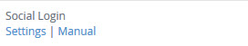
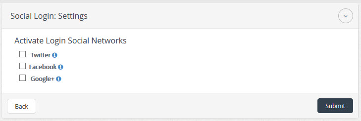
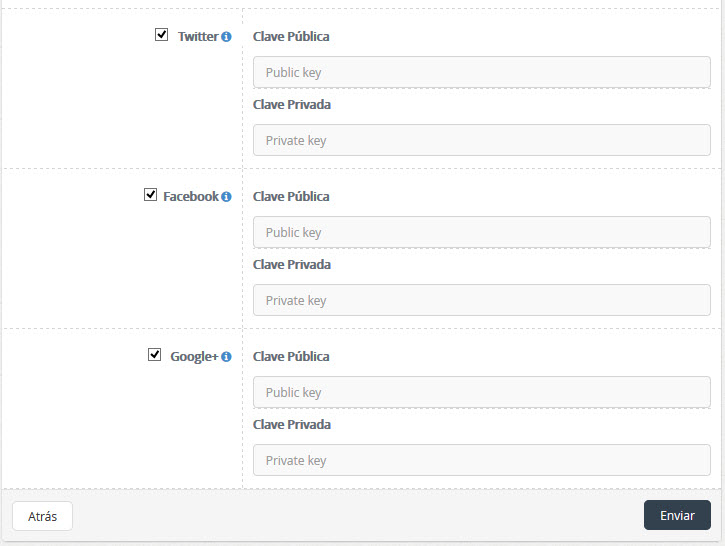
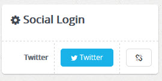

| Description |
|---|
|
Social Login allows access to the system through social networks such as "Facebook", "Twitter" and "Google +"
for a social network can be used on a site first have to create an application on the website of the network
facebook social example, after creating the application we the public and private key appears.
These keys must be added when configuring the network that you want to enable. |
| Configuration | |
|---|---|
|  |
After activating the plugin, select the link "Settings / Configuración" to edit the characteristics of the plugin. |
|  |
Select any of the social networking "Facebook, Twitter, Google +" to enter the system, after selecting social networks, proceed to click on the button "Submit" to save the changes. If you do not want to make any changes press on the button "Back" to return to the list of plugins. |
|  |
To enable a social network first you have to add the public and private key of the network then you click on the submit button. |
|  |
After adding public and private keys, headed to edit the user profile, there looking Social Login where we have the option of linking the network with the user account. |